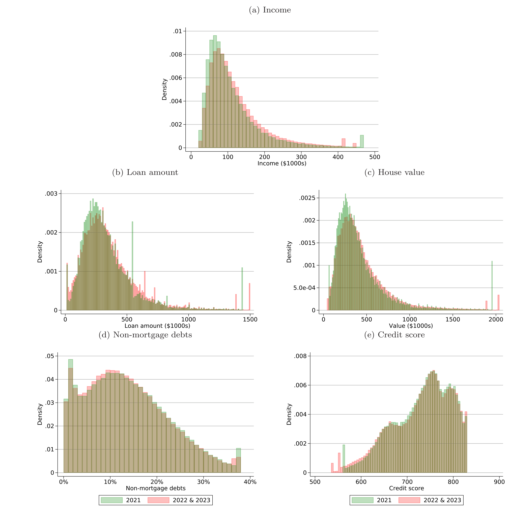
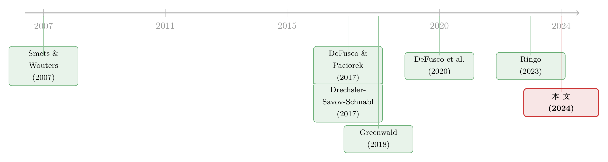

加息真正掐断的，是那条「过线」的房贷
本文读的是 Bosshardt, Di Maggio, Kakhbod & Kermani (2024, Journal of Financial Economics)：2022–2023 年美国房贷锐减，几乎全部不是「人们不想借」的需求收缩，而是利率上行把借款人的 债务收入比 (debt-to-income, DTI) 顶过了承销硬门槛、从供给端被挡在门外——而且被挡住的，恰恰是少数族裔与中等收入家庭。
1 一个看似平凡、却问错了方向的事实
2022 年，美国房贷利率从 3% 一路冲到约 7%，购房贷款笔数比 2021 年掉了 13%，到下半年单季同比跌幅扩大到 20%。
对着这组数字，传统宏观的标准答案几乎是脱口而出的：利率涨了，借钱变贵，需求自然就被压下去了。这正是 Smets and Wouters (2007) 那一类 动态随机一般均衡 (DSGE) 框架里的核心逻辑——加息通过 跨期替代弹性 (elasticity of intertemporal substitution, EIS) 抑制消费与信贷。利率是「价」，量随价走，仅此而已。
可这里有一个被这套叙事悄悄盖住的问题：同样是「房贷少了」，到底是借款人自己选择少借（需求），还是他们想借却借不到（供给）？两者在总量上长得一模一样，但含义天差地别。前者只是周期性的冷却，后者却是一种定向的信贷配给——它会精准地砸在某一类人头上。
本文的全部张力，就压在这一个分岔上。而作者给出的答案是反转性的：几乎全部的下滑，都来自供给侧的 DTI 门槛。
2 关键的那把尺子：反事实 DTI
要把「价」和「量」拆开，难点在于：我们只观察到 2022 年那批实际成交的贷款，看不到那些「本来会借、但被挡住」的贷款。缺的恰恰是反事实。
作者的办法很巧，我觉得是全文最漂亮的一步。首先，他们注意到一个制度事实：美国房贷的 DTI 是有硬门槛的——45% 是 房利美/房地美 (GSE) 收购贷款的软上限，50% 是 GSE 的明确硬上限，57% 则对应 联邦住房管理局 (FHA) 担保贷款的边界。这些不是借款人偏好，而是承销规则，纯粹的供给约束。
接着，一个自然的问题是：利率上行会怎样动 DTI？利率涨，月供涨，DTI 机械地被往上抬。于是作者构造了反事实 DTI：拿 2021 年那批真实成交的贷款，保持贷款本身不变，只把利率换成 2022 年同月的水平，算出它们「如果在 2022 年放款会落在哪个 DTI」。
构造分三步，每一步都对应一个真实方程。第一步，反事实利率等于原利率加上 Freddie Mac 房贷调查利率从放款月到政策年同月的涨幅：
$$R^{cf}_i = R_i + \Delta\text{PMMS}_{m(i)}$$
平均涨了 2.4 个百分点（对 2023 年则是 3.9 个百分点，因为 2023 全年利率都在 6% 以上）。
第二步，用标准的年金摊还公式，把新利率换算成新月供。这是整套方法的核心方程，值得逐项看清楚：
这一换算下来，月供平均多了 $487。
第三步，把月供的增量除以月收入，加回原 DTI，就得到反事实 DTI：
$$DTI^{cf}_i = DTI_i + \frac{P^{cf}_i - P_i}{Y_i}$$
平均抬高了 5.8 个百分点。直觉很清楚：利率冲击通过月供，把每个人沿着 DTI 轴往右推。 推过门槛的那些人，就是潜在被配给出局的人。
这个设计的精髓在于「保持贷款不变、只换利率」——它把利率的直接机械效应单独拎了出来，从而让门槛的作用、以及借款人/放贷人的事后调整，都能被识别出来。
3 缺失的质量，恰好压在门槛之上
有了反事实 DTI，检验就变得异常干净：把 2021 年的反事实 DTI 分布，和 2022 年实际的 DTI 分布叠在一起，看「缺了的那块质量」落在哪里。
然后，关键的对照出现了（Table 1 第 1 列，单位是占 2021 年总放款笔数的百分比）：
DTI ≤ 40：实际比反事实多了3.583%；41 ≤ DTI ≤ 45：多了2.474%；46 ≤ DTI ≤ 50：几乎不变，+0.055%；50 < DTI：暴跌−18.703%；- 合并看
41 ≤ DTI：−16.174%。
总量则下降 12.6%。换句话说，下滑几乎全部集中在 50% 这条硬门槛之上，门槛以下的分布两边几乎重合。

Figure 5: further summarizes changes in continuous borrower, loan, astheback-endDTIratiominusthefront-endpayment-to-incomeratio
但真正关键的一步在于：门槛正下方有没有「堆积」（bunching）？如果借款人是通过缩小贷款（intensive margin，集约边际）来勉强压回门槛之内，我们就该看到门槛下方鼓起一个包。可数据里没有明显的堆积——41–45% 区间只多了 2.5%，46–50% 几乎为零。
于是反转落地了：缺失的质量集中在门槛之上、而门槛之下又没有补偿性的堆积，说明被约束的借款人主要不是「换一套小房子凑合借」，而是干脆退出了购房市场（extensive margin，扩展边际）。Greenwald (2018) 早就给出过这个理论预言——货币政策的传导强度，是 DTI 分布的函数；这篇论文把它在一次真实加息里量了出来。
那会不会是别的供给渠道（比如 Drechsler, Savov and Schnabl (2017) 的存款渠道）在作怪？作者承认这无法完全排除，但反驳很有力：任何笼统的需求或供给冲击，都很难解释为什么下滑会恰好卡在 50% 这条线上——这种锐利的断点，是 DTI 门槛特有的指纹。
4 把需求也算进来，结论依然站得住
一个挑剔的读者会说：反事实 DTI 只动了利率，可同期收入、房价都在变，需求本身也在动啊。
作者用两种独立的方法回应。其一是需求调整的反事实 DTI：用 DeFusco and Paciorek (2017) 估计的房贷需求利率弹性来调整集约边际，再用低 DTI（不受门槛影响）贷款的增长来校准扩展边际。结果下滑幅度反而更大——2022 年降 15%–18%（Table 1 第 1 列，50<DTI 一项达 −29.926%）。其二是VA 调整法：借助 退伍军人事务部 (VA) 担保贷款 DTI 约束更松这一点，沿用 DeFusco et al. (2020) 的思路控制门槛附近逐个百分点的需求变化，得到 16%–19% 的下滑（第 5 列），同样几乎全部来自 50% 之上。
三种方法、三套假设，结论一致：减少的放贷主要由供给约束驱动，而非需求。 而需求侧反应之弱，又与 Best et al. (2020) 估计的「跨期替代弹性很小」相互印证——价格那条腿，本来就没那么有力。
5 谁被挡在了门外
接着，一个更尖锐的问题浮上来：被这道门槛配给出局的，是谁？
数字是冷峻的。黑人和西班牙裔家庭的反事实 DTI 超过 50% 的概率，分别比白人高 62% 和 68%；这「解释了他们在 2021→2022 年间贷款笔数多减少 59% 和 86% 的大部分」。年收入低于 $100,000 的家庭，反事实 DTI 超过 50% 的概率是高收入者的两倍多，几乎贡献了全部的下滑。
请注意这里的机制：它不是放贷人当面的种族歧视，而是一道看似中性的承销规则，经由「这些群体本就更接近 DTI 上限」这一事实，被加息机械地转化成了定向的信贷收缩。规则越硬，货币政策越有效，但也越不平等。（关于首付/收入约束如何把特定群体锁在门外，可参见《买不起的，其实不是房子，而是机会》；关于把父母收入并入按揭如何同时松开又收紧这扇门，可参见《把爸妈的收入也算进按揭》。）
6 从一笔房贷，到一座城市
最后，作者把镜头拉远到一般均衡。他们对每个 MSA 算了一个「转换借款人份额」——即 2019–2021 年里那些观测 DTI 在 45% 以下、但反事实 DTI 在其之上的借款人占比，也就是「本来够格、加息后被推过线」的那群人。
结果，这个份额每高出 1 个标准差，2021Q4 到 2023Q4 的房价增速就低 0.17 到 0.30 个标准差（控制了就业、人均收入、房屋供给弹性等地方经济条件之后依然成立）；信用卡与借记卡消费增速则低 0.20 到 0.26 个标准差。被掐断的房贷，顺着房价和「从住房财富里掏钱消费」的链条，扩散成了整座城市的降温。
这恰好把货币政策的传导，从单笔贷款一路接到了宏观——而其强弱，取决于 DTI 分布这一时变的横截面结构。
7 文献脉络
这条线的起点，是宏观里那个「加息压需求」的标准叙事（Smets and Wouters, 2007）。但房贷市场的研究者很早就发现，故事没那么简单：利率不只通过跨期替代影响需求，还会通过借贷约束影响供给。Greenwald (2018) 给出了「房贷信贷渠道」的理论，明确指出传导强度是 DTI 分布的函数；Beraja et al. (2018)、Di Maggio et al. (2017)、Di Maggio, Kermani and Palmer (2020) 则从再融资渠道、利率传导与量化宽松等角度，把货币政策—房贷—消费这条链条逐段打通。

与此并行的，是一套「断点与缺失质量」的实证工具：DeFusco and Paciorek (2017) 用合规贷款上限处的堆积估计房贷需求弹性，Best et al. (2020) 用房贷利率档位估计跨期替代弹性，DeFusco et al. (2020) 则研究 DTI 监管本身如何配给杠杆。本文站在这两条线的交汇处——它借用堆积/缺失质量的语言，但问的是一个新问题：固定的 DTI 门槛，如何与一次外生的利率上行相乘，放大成定向的信贷配给（这正是它区别于 DeFusco et al. (2020) 研究「新门槛引入」的地方）。再加上 Ringo (2023) 对「货币政策与购房不平等」的关注，本文把识别、分布与一般均衡缝在了一起。
8 评论与延伸（Q&A + 研究方向）
(a) 几个可能的疑问
Q：这和「需求下降」到底有什么本质区别？总量上不都是房贷少了吗？
区别在于「缺失的质量落在哪里」。纯需求收缩应当在整个 DTI 分布上大致均匀地压低成交；而本文看到的是下滑锐利地集中在 50% 门槛之上、门槛之下几乎不动。这种断点是供给配给的指纹，普通需求冲击造不出来。
Q：反事实 DTI 假设「利率冲击对所有借款人一视同仁」，这可信吗？
作者用附录 Figure A.3 回应：不同信用分段的利率上行幅度大致相同。这支持了「只换利率、保持贷款不变」的横向可比性。当然，若高风险借款人面临的利差扩张更剧烈，反事实 DTI 会低估对边际借款人的冲击——但那只会让结论更强。
Q：凭什么断定是 extensive margin（退出市场），而不是 intensive margin（缩小贷款）？
两个证据合起来：门槛之上有大块缺失质量（
50<DTI减18.7%），门槛正下方却没有补偿性堆积（41–45%仅+2.5%）。如果人们都靠缩贷压回线内，下方该鼓起一个包；既然没有，缺的那块就只能是「索性不买了」。
Q：会不会是存款渠道之类的其他供给冲击，而 DTI 只是恰好相关？
不能完全排除，作者在脚注里也坦承这点。但其他供给渠道很难解释「为什么下滑恰好卡在 50% 这一条承销线上」——正是这种制度性断点，把 DTI 门槛从一众候选机制里单独识别了出来。
Q：少数族裔受影响更大，是放贷歧视吗？
不是。机制是机械的：黑人、西班牙裔与中低收入家庭本就更靠近 DTI 上限，加息把更多人推过门槛。这反而提示了一个更隐蔽的问题——一道形式中性的规则，可以在货币紧缩中产生强烈的分配后果。
Q：一般均衡那部分的因果性有多硬？
这是全文最弱的一环。MSA 层面「转换借款人份额」与房价/消费增速的回归是横截面相关，虽控制了就业、收入、供给弹性，但「高 DTI 暴露地区」本身可能在其他维度也更脆弱。把它读作「一致的、量级合理的关联」比读作「干净的因果」更稳妥。
(b) 几个可能的研究问题与提案
1. 公司债市场的「门槛」翻版：评级边界的信贷配给。 【经济故事】房贷有 DTI 硬门槛，公司债有同样离散的评级边界（尤其投资级/高收益的 BBB−/BB+ 这道线）。加息抬高利息支出、压低 利息保障倍数 (interest coverage)，可能把发行人推过评级阈值，触发投资级配置型资金的被动抛售与发行配给——这正是房贷故事的信用市场镜像。 【可行性】中。数据用 Mergent FISD + Compustat 构造「反事实利息保障倍数」，识别上可借鉴本文的反事实+缺失质量思路，难点在评级门槛比 DTI 更「软」、调整渠道更多。
2. 外资持有人与 Agency MBS 的供给收紧。 【经济故事】加息周期里，外资从 Agency MBS 撤出是否放大了房贷的供给侧紧缩？若外资是边际买家，其退出会推高一级市场利差，进一步把借款人推过 DTI 门槛——把本文的「门槛配给」与跨境资本流动接起来。 【可行性】中。数据用 TIC + eMBS/二级市场利差，识别外资冲击可借助汇率或母国货币政策的外生变动作工具。与我自己关于外资持有人与流动性的研究方向天然契合。
3. 被配给出局的借款人，后来去了哪里？ 【经济故事】本文止于「他们退出了市场」，但没追踪去向：是延后购房、转向租房、还是绕道非 GSE/影子银行渠道？这决定了配给的福利成本到底是「推迟」还是「永久剥夺」。 【可行性】中。需要可追踪个人的面板（如信用局数据或 NMDB 的纵向维度），识别上可比较「反事实 DTI 刚好过线 vs 刚好没过线」的借款人后续行为。
4. 把反事实 DTI 法搬到小企业/商业地产贷款。 【经济故事】SME 与 CRE 贷款同样有偿债覆盖率（DSCR）这类硬约束，加息同样会把借款人沿约束轴往外推。能否复制出「缺失质量集中在 DSCR 门槛之上」的图景？ 【可行性】中低。约束阈值更分散、数据可得性更差（缺一个像 NMDB 的代表性样本），是主要障碍。
9 我的判断
这篇文章最漂亮的地方，是用一个极其朴素的构造（保持贷款不变、只换利率）把货币政策传导里「价」与「量」干净地切开，再借助 DTI 门槛这把制度性的「刻度尺」，把缺失质量定位到了具体的几条承销线上。三种反事实方法相互印证，结论稳健；从单笔贷款到分配后果、再到城市层面的房价与消费，叙事完整且有政策含金量——它实证地确认了 Greenwald (2018) 的预言。
我对识别的担忧主要有两处。其一，反事实「保持贷款不变」其实排除了借款人搬去更便宜的房子这条路；作者也承认许多边际借款人选择了退出，但「想留没留住」与「主动退出」在福利上含义不同，值得更细的分解。其二，一般均衡那一节是横截面回归，DTI 暴露高的地区很可能在别的维度也更脆弱，因果链条比前半篇弱不少。
后续我最想看到的，是把这套「门槛 × 利率冲击」的逻辑搬到信用市场——无论是公司债的评级边界，还是这道门槛在加息退潮后是否会反向松开、把同一批人重新放进来。如果配给是可逆的，福利账就要重算。（关于加息如何把人「锁」在原有按揭里、以及银行渠道在不同制度下的异质传导，可分别参见《被自己 3% 的房贷「锁」在原地》与《同样的加息，为什么德国的银行和西班牙的银行走向相反？》。）
参考文献
- Beraja, M., Fuster, A., Hurst, E., Vavra, J. (2018). Regional Heterogeneity and the Refinancing Channel of Monetary Policy. Quarterly Journal of Economics 134(1), 109–183.
- Best, M., Cloyne, J., Ilzetzki, E., Kleven, H. (2020). Estimating the Elasticity of Intertemporal Substitution Using Mortgage Notches. Review of Economic Studies 87(2), 656–690.
- Bosshardt, J., Di Maggio, M., Kakhbod, A., Kermani, A. (2024). The Credit Supply Channel of Monetary Policy Tightening and Its Distributional Impacts. Journal of Financial Economics 160, 103914.
- DeFusco, A. A., Paciorek, A. (2017). The Interest Rate Elasticity of Mortgage Demand: Evidence from Bunching at the Conforming Loan Limit. American Economic Journal: Economic Policy 9(1), 210–240.
- DeFusco, A., Johnson, S., Mondragon, J. (2020). Regulating Household Leverage. Review of Economic Studies 87(2), 914–958.
- Di Maggio, M., Kermani, A., Keys, B. J., Piskorski, T., Ramcharan, R., Seru, A., Yao, V. (2017). Interest Rate Pass-Through: Mortgage Rates, Household Consumption, and Voluntary Deleveraging. American Economic Review 107(11), 3550–3588.
- Drechsler, I., Savov, A., Schnabl, P. (2017). The Deposits Channel of Monetary Policy. Quarterly Journal of Economics 132(4), 1819–1876.
- Greenwald, D. L. (2018). The Mortgage Credit Channel of Macroeconomic Transmission. Working Paper.
- Ringo, D. (2023). Monetary Policy and Homebuying Inequality. Federal Reserve Board Finance and Economics Discussion Series 2023-006.
- Smets, F., Wouters, R. (2007). Shocks and Frictions in US Business Cycles: A Bayesian DSGE Approach. American Economic Review 97(3), 586–606.